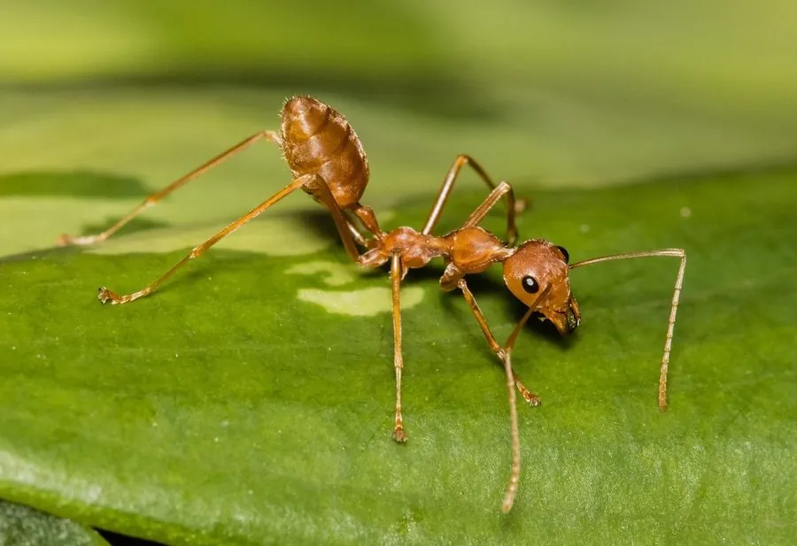

昆虫 · 动物界
黄猄蚁 Oecophylla smaragdina

用幼虫吐的丝把树叶缝成巢的蚂蚁，体色橙黄，树栖生活，捕食害虫，是热带果园中著名的生物防治帮手。
- 分类
- 门节肢动物门纲昆虫纲目膜翅目科蚁科属织叶蚁属
- 栖息环境
- 热带、亚热带树冠层，用树叶和丝筑巢于树上
- 地理分布
- 中国南方、东南亚、印度和澳大利亚北部
- 保护级别
- 暂无评估；可用于生物防治
物种志
黄猄蚁工蚁体长约 7–10 mm，体橙黄至红褐色，身体细长，足长，善于在树枝间快速爬行。工蚁分大型和小型两类，大型工蚁负责防卫和捕猎，小型工蚁负责育幼和筑巢。蚁后体形较大，深褐色。
它生活在亚洲热带和亚热带地区的树冠层，用幼虫吐出的丝把新鲜树叶缝合起来，做成悬挂在树上的巢，群体可分布在多棵树上。黄猄蚁是凶猛的捕食者，捕食蛾类幼虫、甲虫、蝗虫等害虫，因此被用于柑橘等果园的生物防治，中国南方和东南亚有利用黄猄蚁防治柑橘害虫的传统。它也会攻击接触巢穴的人，被咬后会疼痛，观察时要保持距离。
形态与习性
- 食性捕食蛾类幼虫、甲虫、蝗虫等害虫
- 体长工蚁约 7–10 mm
- 筑巢用幼虫吐的丝把树叶缝合成果树上的巢
- 生态作用捕食害虫，可用于果园生物防治
- 分布中国南方、东南亚、印度和澳大利亚北部
趣味知识
- 黄猄蚁用幼虫吐出的丝当线，把树叶缝成巢。
- 它是凶猛的捕食者，能帮助果园控制害虫。
- 中国南方和东南亚有用黄猄蚁防治柑橘害虫的传统。
生态关系
- 共生 → 相思树 蚂蚁保护植物、植物提供食物与住所